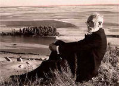

Miguel de Unamuno -- 1864-1936
 We know that there was a close relationship between Miguel de Unamuno and Antonio Machado. Although Machado's letters to Unamuno have been preserved, the letters from Unamuno were lost, quite possibly during the poet's tragic escape from Franco's army shortly before his death. Because of this we do not know what Unamuno said in his letters to Machado, but we have an anecdotal account which reveals how he felt about the poet. Miguel Pérez Ferrero describes an incident when Unamuno visited a café in Madrid where the Machado brothers had a tertulia, and upon arriving at the door he said: "I am here to greet the man with the shabbiest clothes and the purest soul of any person I know: Don Antonio Machado." [1] In the biography of his brother, José Machado tells us that Unamuno hardly ever came to Madrid without making an effort to meet with Antonio and Manuel. José also describes the last time they saw each other, and he tells us that there were few things which affected Antonio as deeply as the death of Unamuno, s hortly before the beginning of the Spanish Civil War.
I have translated several of Unamuno's works on the subject of religion, starting with his essay "My Religion" ("Mi religión") which serves as an introduction to his religious thought and provides the foundation for everything he wrote on this subject. Although Unamuno's religious poems express his basic philosophy of life, most have not been translated into English. I have therefore translated the poems dealing with religion from his first two books of poetry: Poems (Poesías) and Rosary of Lyrical Sonnets (Rosario de sonetos líricos), as well as Saint Manuel Bueno, the Martyr (San Manuel Bueno, Martir), and Unamuno's long meditation on the painting of the crucifixion by Diego de Velazquez: The Christ of Velazquez (El Cristo de Velázquez). I have added some comments about my translation of poetry below.
For a detailed discussion of Unamuno's religious thought the reader may consult my articles: Unamuno and the Religion of Uncertainty, The God of Miguel de Unamuno and The Psalms of Unamuno which are also posted on this web site.
Mi religion -- My Religion (Full text, .pdf)
Vida de Don Quijote y Sancho -- The Life of Don Quijote and Sancho (.pdf)
Adentro! -- Inside! (.pdf)
The Religious Poetry of Miguel de Unamuno
For this translation I have used Volume IV of Unamuno's Complete Works, published in 1999 by the Biblioteca Castro. It is never easy, or simple, to translate poetry from one language to another, and the translation of Unamuno's poetry is especially difficult. There are always certain idioms or expressions which do not have an exact equivalent in the second language. Then, there is Unamuno's poetic style of changing the word order with his frequent use of hyperbatons, as well as other alterations in the order of his words. Finally, when Unamuno writes prose as well as poetry, he sometimes uses paradoxical or obscure language to make the reader think and, perhaps more importantly, to express his own uncertainty about the concepts he is expressing. In all cases I have tried to create a translation which coincides as closely as possible with an understanding of Unamuno's intention. In my translation of Unamuno's sonnets, as in my translation of Machado's poetry, I did not try to make the words rhyme, because to do that would have forced me to use words that strayed too far from the original meaning.
Since I am translating Unamuno's religious poetry, I would like to say something about his attitude toward matters belief and unbelief. As I have stated in my articles, although he struggled with doubts, Unamuno was more inclined to belief than non-belief. Those critics who have considered him an atheist have perhaps been influenced by their own lack of religious faith. In the poems I have translated, there are none--not even his paradoxical poem, "The Atheist's Prayer" ("La oración del ateo")--that express unbelief. Some critics have felt that Don Manuel, the character from his novella, Saint Manuel Bueno Martyr (San Manuel Bueno Martir), the priest who lost his faith in God, is an example of Unamuno's lack of belief. But the narrator of this story, Angela Carballino, is perhaps a better example of Unamuno's real state of mind. At first, Angela does not question her religious beliefs, but when her brother, Lazaro, reveals that her beloved Don Manuel had lost his faith in God, she begins to doubt. She asks herself: "Do I believe?" However, by the end of the novella Angela has come to believe that Don Manuel and her brother, as Unamuno expresses it with a play on words: "died believing they did not believe in God, but while not believing, actually believing, in an active and resigned state of unhappiness." She adds that, "for some mysterious and unknowable purpose, God let them think they were unbelievers, but then, when they were face to face with death, perhaps they realized their mistake." In his book, The Life of Don Quijote and Sancho (La vida de Don Quijote y Sancho) Unamuno has stated paradoxically that "only those who doubt can actually believe." For most people, doubt has a negative connotation, but it is obvious that for Unamuno the opposite is true. Since the person whose faith is not tempered by doubt is open either to fanaticism or to spiritual laziness, the feeling of doubt not only helps us keep an open mind, but it also helps us live and act with greater vitality. My translation of Unamuno's poetry has convinced me of the truth of these words.
[1] Miguel Pérez Ferrero, Vida de Antonio Machado y Manuel 2a Edición (Madrid: Austral, 1953), p. 196.